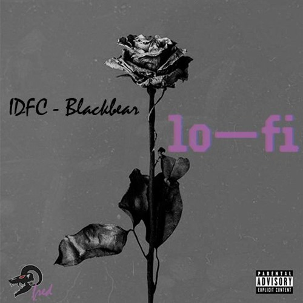
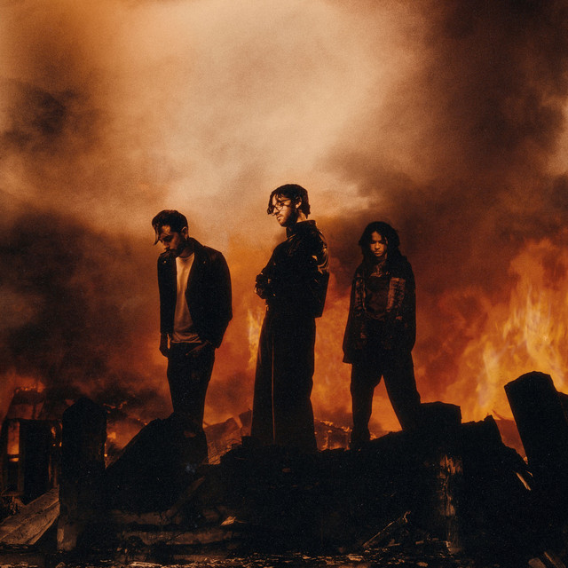
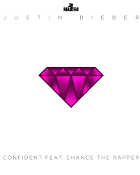
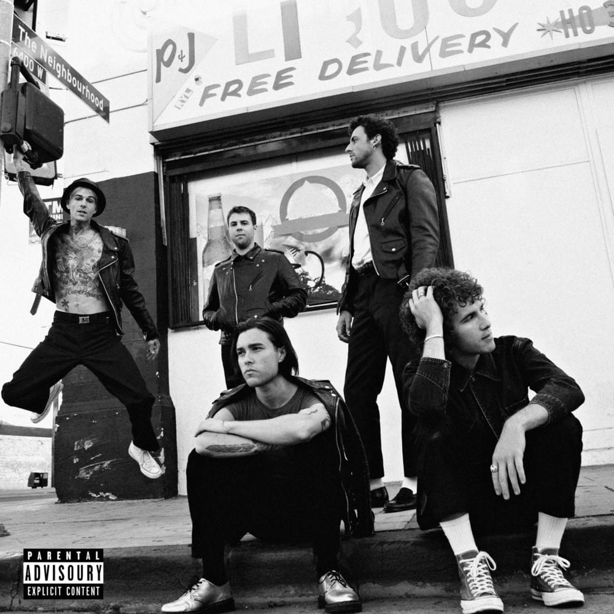
Meski penampilannya kalem, lagu favoritnya malah penuh energi dan garang. Kayanya orang bakal kaget pas tau playlist kamu.
Cukup jarang perempuan yang suka warna gelap. Kayanya kamu punya seleranya sendiri, Keren.
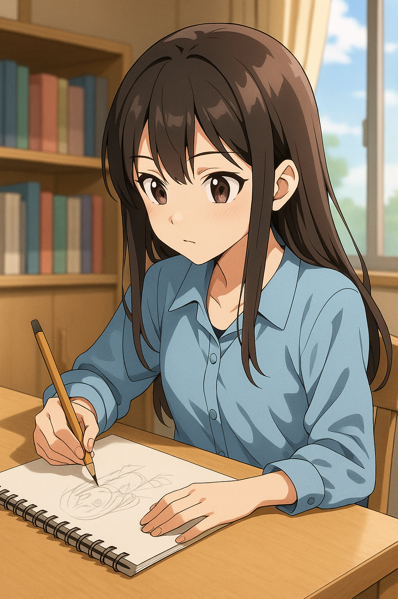
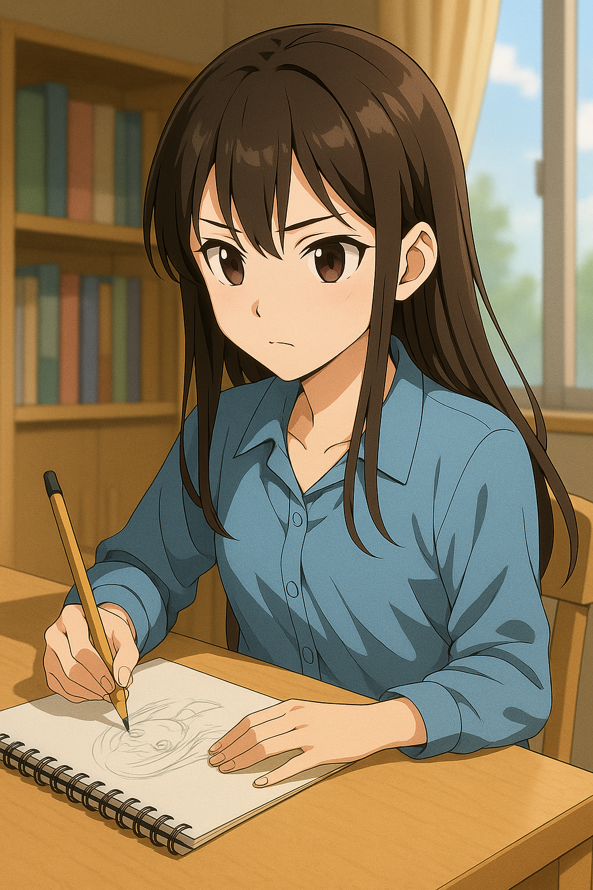
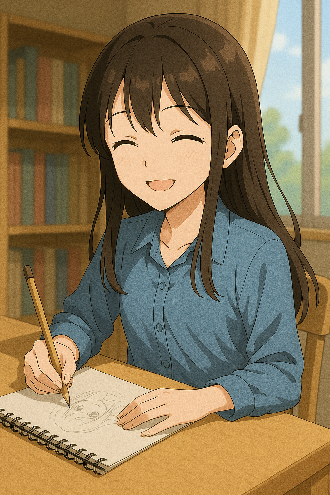
Menurut F tiap gambar kamu itu ada punya cerita kecil yang kamu simpan diam-diam di sana. Contohnya huruf F disalah satu gambar yang kamu pernah buat.
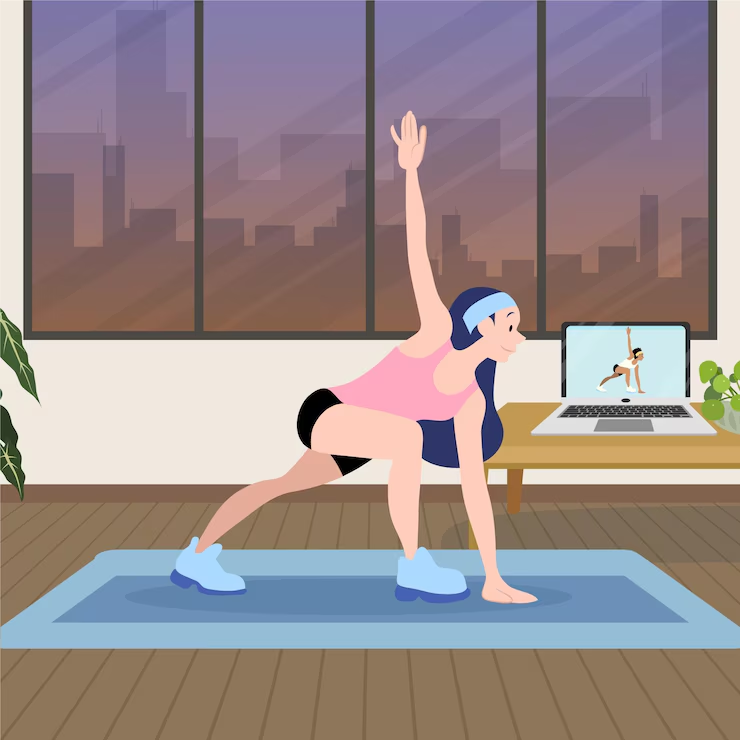
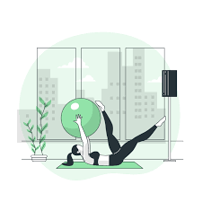
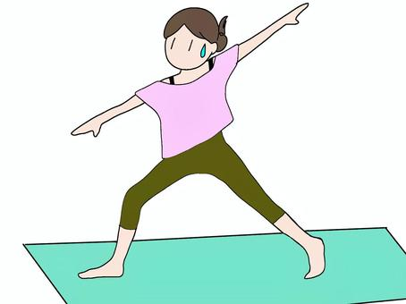
Gerakan-gerakan pilates sakit banget waktu dicoba, ko bisa kamu suka pilates ya?
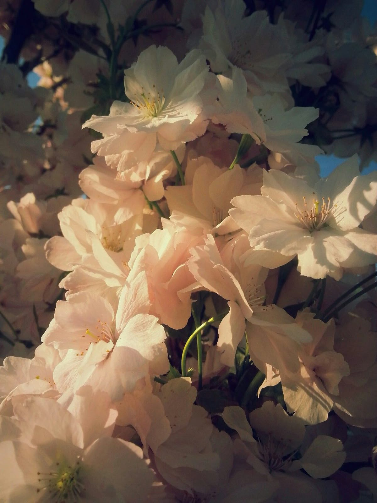
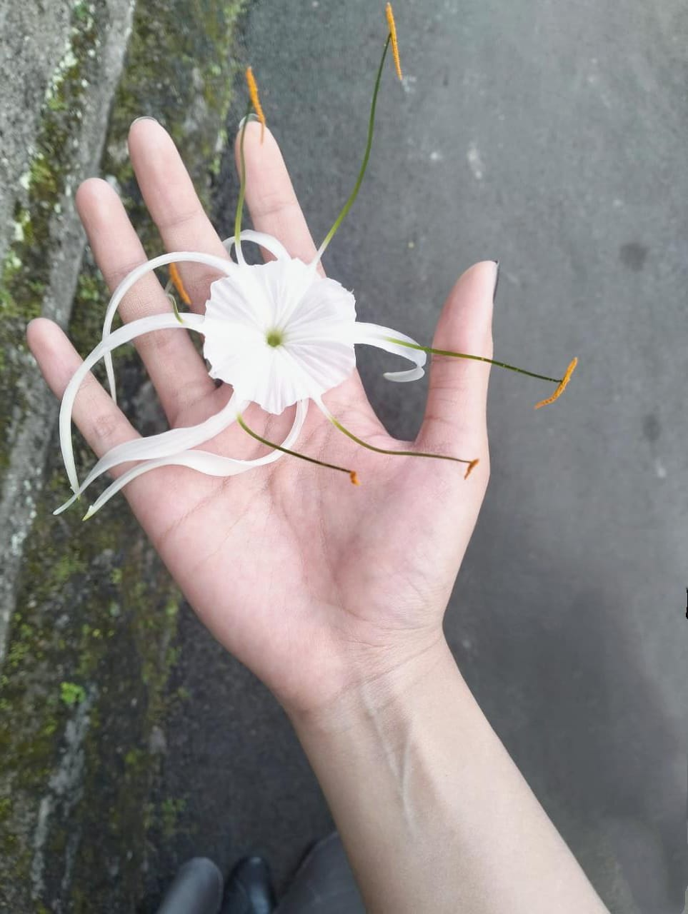
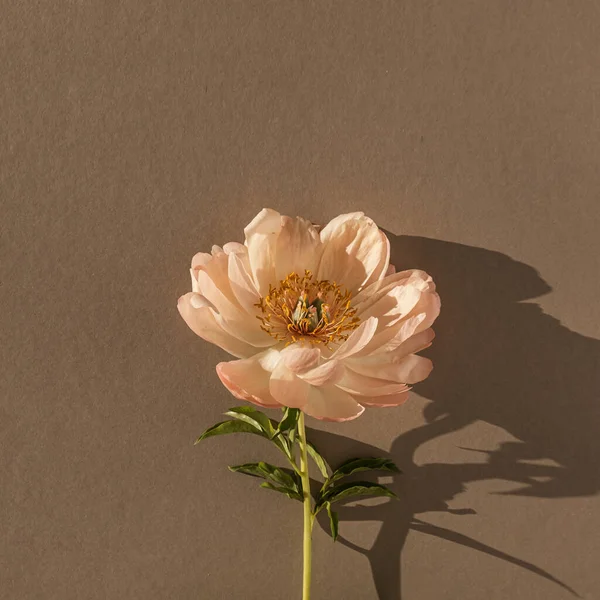
Selain sama-sama suka olahraga, hal lain yang ngerasa F sefrekuensi sama mu adalah karena sama-sama suka bunga.
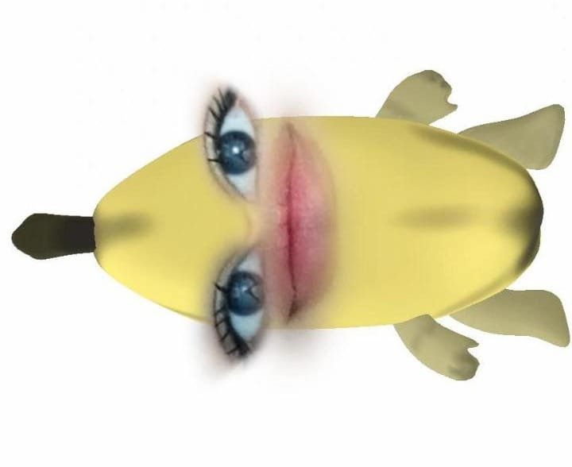
Ka? Udah liat gambar diatas? Ngerti kan?